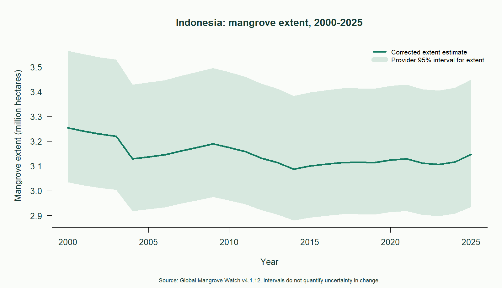
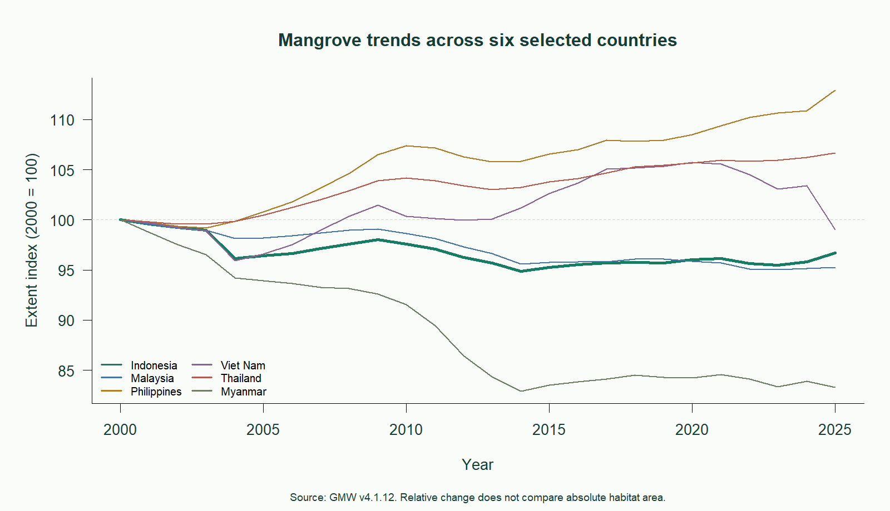
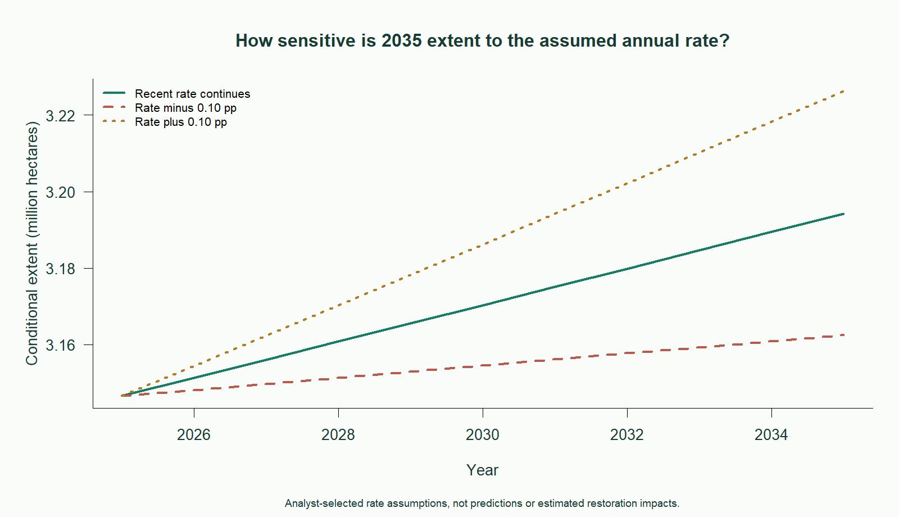

INDEPENDENT RESEARCH PILOT / R ANALYSIS
Indonesia Mangrove Trends
Historical change, regional context, and scenario sensitivity.
Indonesia's estimated mangrove extent shows a 3.29% net decrease between 2000 and 2025.
2000 extent3,253,709hectares
2025 extent3,146,544hectares
Net change-107,165hectares
Research question
How has Indonesia's estimated mangrove extent changed since 2000, how does its relative trajectory compare with five selected regional countries, and how sensitive are conditional 2035 values to assumed annual rates?
Historical change and uncertainty

The 2015-2025 compound annual rate is +0.151%. This recent rate need not persist.
Annual national totals measure net change. They cannot locate local habitat loss, quantify gross loss and gain, or establish the causes of change.
Regional comparison

Indexing to 100 in 2000 makes relative trajectories comparable. The comparison group is fixed in advance: Indonesia, Malaysia, the Philippines, Viet Nam, Thailand, and Myanmar. It is not a complete regional ranking.
Scenario sensitivity

Each scenario starts from the 2025 estimate. Extent equals the starting value multiplied by (1 + annual rate) raised to years elapsed. The baseline uses the 2015-2025 compound rate. Alternatives adjust it by plus or minus 0.10 percentage points per year. These deterministic assumptions have no assigned probability and do not estimate any intervention's impact.
Methods and checks
- Read the original three-sheet workbook in R using readxl. Verify its published MD5 checksum.
- Remove footer totals and blank rows, reshape country-year values, join estimates and intervals on keys, and validate uniqueness, completeness, nonnegative values, and ordered intervals.
- Retain all 41 source years in the cleaned table. Use 2000-2025 for the focal analysis and calculate changes directly from source estimates.
- Export tidy data, numeric results, scenario assumptions, figures, session information, and this report from one script.
Interpretation and next research step
Use the national trend to motivate local investigation. A next phase would map gross change within a small study area, examine observation quality, and integrate hydrological and community evidence before evaluating restoration sites.
Limitations
This is descriptive country-level analysis. Published intervals apply to extent estimates; differences between years require temporal error covariance for an appropriate change interval. Do not treat overlapping intervals as a significance test. The source applies a global accuracy-based area correction and includes temporally filtered and infilled estimates, so local accuracy and year-to-year independence are not assured. National patterns cannot demonstrate restoration effectiveness, biodiversity change, carbon outcomes, or community benefits.
Source
Bunting et al. (2026), Global Mangrove Watch: Timeseries of Mangrove Extent, v4.1.12. Country extent and provider 95% intervals, in hectares. CC BY 4.0. Accessed October 21, 2026.